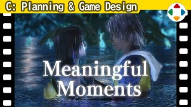
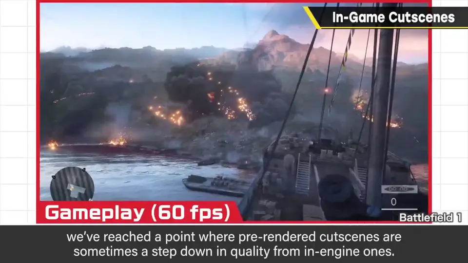
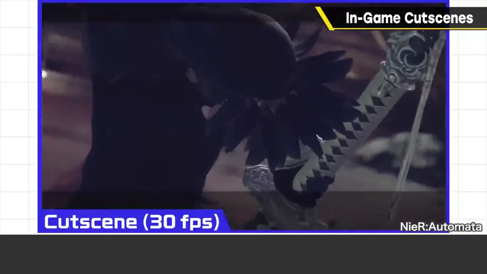
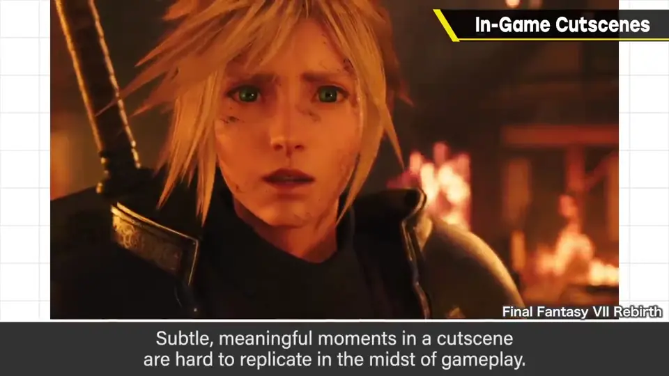
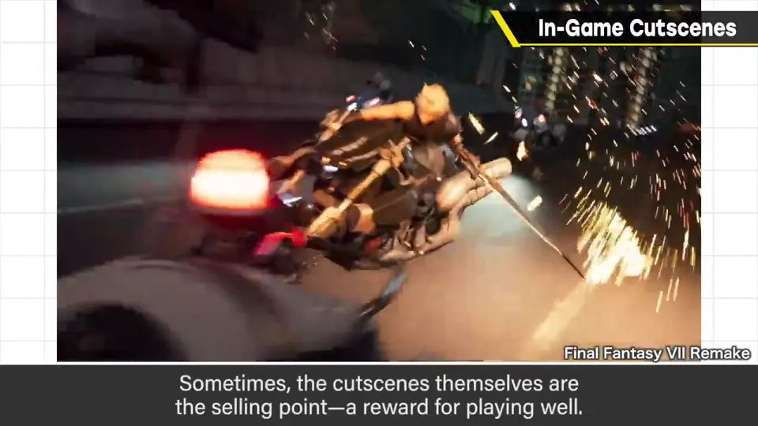
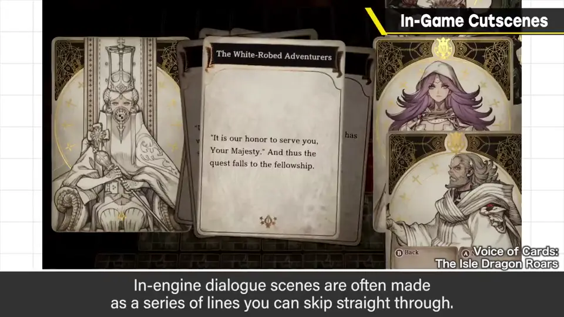
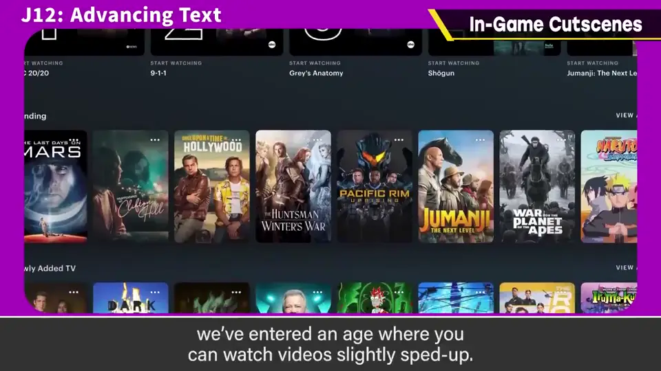
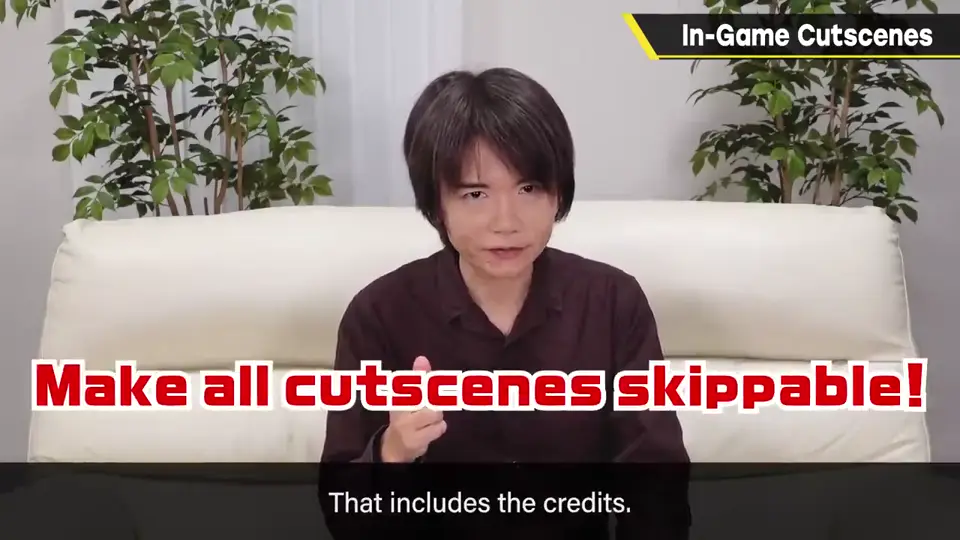
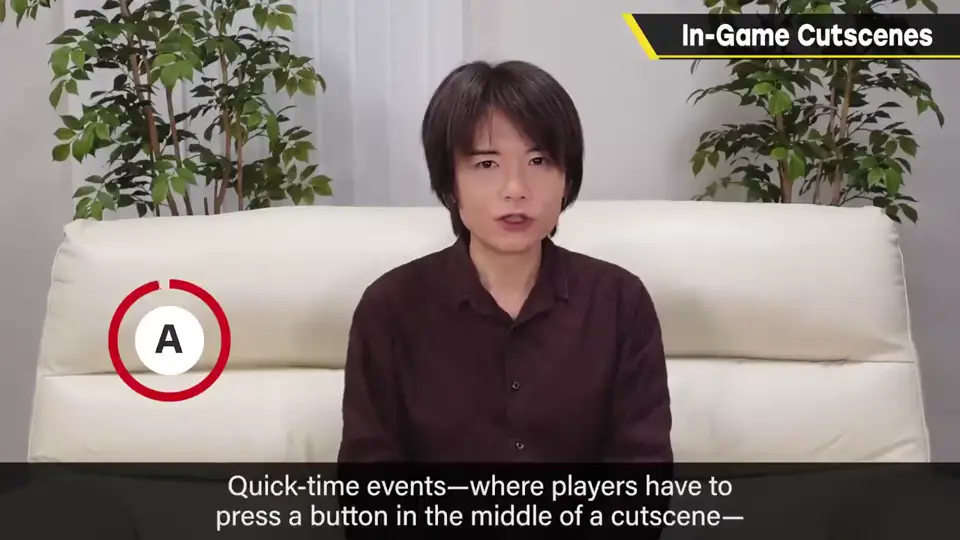

速览
最近游戏表现真的很厉害：最尖端作品里，预渲染等影片反而可能比实机构成的影片画质低——分辨率、帧率会下降（例如实机 60fps、过场 30fps）。正题：与主线无关的影片部分特别长，你怎么看？视作品而定，樱井自己多半会着急，希望长篇表现稍微收一收。但影片长度无所谓好坏：深挖能让故事更清楚、促进代入感；从影片细微动作中感受意义，在游戏中很难发生。激烈的动作游戏中插入影片也有让人喘口气的一面——不过最激烈的动作游戏大概也会设计无敌区域，优先度未必高。也有看影片本身就是卖点、是奖励的，但在随便就被传上网的时代，很难成为奖励——以剧情为主的作品真是进入了艰难时代。实机构成的对话场景大多能按台词单位跳过；影片大多不行，所以若能跳到中途或快进，可能更友好。这是 YouTube、录像等影像服务都被稍微快进着享受的时代；呕心沥血做的影片希望被好好看，可以理解，但作为创作者，配合时代性也有商量余地。相关地：影片一定要能一并跳过，制作人员表也一样——即使是二周目数据，也不一定是第一次看过。另外所谓 QTE（影片中途需要按键输入）常被讨厌：想让玩家带着紧张感看影片可以理解，但要做就慎重。
1. 实机过场的现状 0:04
最近的游戏表现真的很厉害。最尖端的作品里，预渲染之类的影片，甚至可能比实机构成的影片画质更低——分辨率和帧率会下降。


2. 过场的价值与代价 0:30
正题：与主线无关的影片部分特别长——你怎么看？视作品而定，樱井自己多半会着急，希望冗长的表现稍微收一收。
但影片的长度不能说好或坏：
- 深入描写能让故事更清楚、促进代入感；
- 从影片里细微动作中感受到意义，这在游戏中很难发生；
- 激烈的动作游戏中插入影片，也有让人喘口气的作用（不过最激烈的动作游戏大概也会巧妙设置无敌区域，优先度未必高）。


也有「看影片」本身就是卖点、是奖励的作品。但在随意就能被传上网的时代，影片很难成为奖励——以剧情为主的作品真是进入了艰难的时代。
3. 让过场更友好 1:44
实机构成的对话场景，大多做成能按台词单位跳过；影片则大多不行。所以如果能跳到中途，或者做出快进的表现，也许更友好。


现在是 YouTube、录像等影像服务都被稍微快进着享受的时代。呕心沥血做的影片希望被好好看，可以理解；但作为创作者，配合时代性还有商量余地。
4. 必须可跳过；QTE 慎用 2:20


另外，所谓 QTE（影片中途要求按键输入）往往被讨厌。想让玩家带着紧张感看影片可以理解，但要做的话请慎重。
自测题
1. 为什么最尖端游戏中预渲染影片可能比实机画质低？
预渲染影片的分辨率与帧率可能下降，而实机画面已经很高质量。 0:04
2. 过场动画的优点有哪些？
让故事更清楚、促进代入；细微动作的意义；激烈动作中让人喘口气；也可作卖点或奖励。 0:44
3. 樱井对过场的跳过有什么主张？
能逐句跳过或跳到中途、快进更友好；所有影片（含制作人员表）都必须能一并跳过，即使是二周目。 2:20